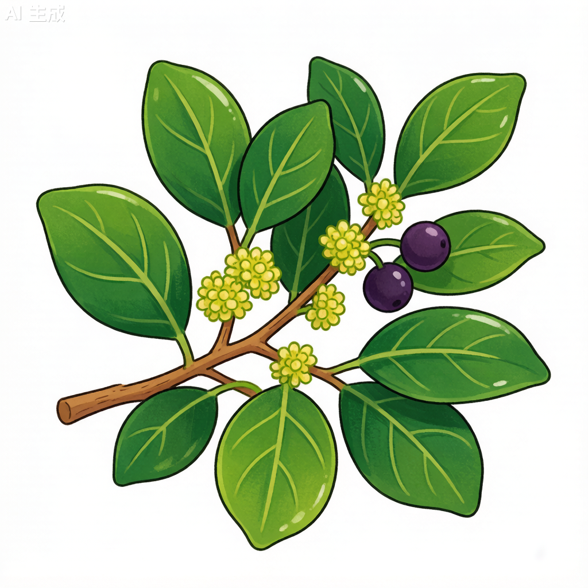

樟树 Cinnamomum camphora
香樟、樟木、芳樟、乌樟 · 樟科樟属 · 南方市树 · 全株芳香

樟树植物学插画（AI生成）
形态特征
常绿大乔木，高达30米，胸径可达5米。树皮幼时绿色平滑，老时黄褐色纵裂。叶互生卵状椭圆形，长6-12厘米，离基三出脉——这是樟属植物的关键识别特征，脉腋有明显腺点。叶片揉碎后有强烈樟脑香气。圆锥花序腋生，花小黄绿色。核果球形，成熟时紫黑色。
分布与生境
分布于长江以南各省区，以台湾、福建、江西、湖南、广东为多。生于海拔200-1,800米低山平原。喜光稍耐阴，喜温暖湿润气候，不耐寒。深根性，抗风能力强。
分类学
樟属(Cinnamomum)约有350种，分布于亚洲和美洲热带地区。樟树是中国南方最具代表性的常绿阔叶树之一，其学名"camphora"即指樟脑。樟树与同属天竺桂的区别在于离基三出脉明显且脉腋有腺点。
形态对比
| 性状 | 樟树 | 天竺桂 |
|---|---|---|
| 叶脉 | 离基三出脉明显 | 三出脉不明显 |
| 脉腋腺点 | 有 | 无 |
| 樟脑味 | 浓烈 | 淡 |
| 树皮 | 幼绿老褐纵裂 | 灰褐色平滑 |
生态与文化
深根性，抗风能力强。寿命可达千年以上。全株含挥发性樟脑油，对昆虫有驱避作用。"樟"与"章"同音，寓意文章昌盛，常植于书院文庙。
利用价值
木材耐腐防虫，可作家具箱柜。枝叶可提制樟脑、樟油。为优良风景树和行道树。杭州、南昌等城市以樟为市树。